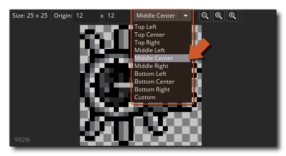
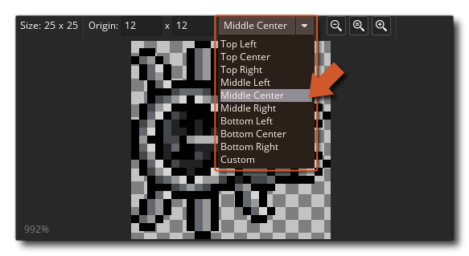
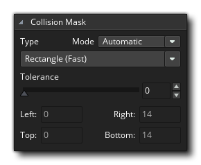

Nous commencerons cette section du Guide de démarrage rapide en examinant les sprites qui sont généralement l'une des premières choses dont vous aurez besoin pour créer un projet dans GameMaker Studio 2. Comme expliqué dans la section sur les ressources, un sprite est une image qui peut être animée (même si ce n'est pas obligatoire), puis dessinée à l'écran. En général, un sprite sera associé à un objet, mais vous pouvez dessiner des sprites de leur propre chef, soit à partir du code, soit dans l'éditeur de pièces Asset Layer (plus d'informations plus loin). Vous pouvez également créer un sprite à utiliser comme jeu de cases, mais nous explorerons cette option ultérieurement.
Lorsque vous créez un nouveau projet à partir de la page de démarrage, votre arborescence de ressources contiendra uniquement des dossiers vides pour les ressources dont vous pourriez avoir besoin. Vous devez donc cliquer avec le bouton droit de la souris  dans le dossier des ressources d'image-objet, puis sélectionnez l'option Créer. Cela va créer une nouvelle image-objet et ouvrir l'éditeur de sprite pour vous (si l'éditeur de sprite ne s'ouvre pas, double-cliquez simplement
dans le dossier des ressources d'image-objet, puis sélectionnez l'option Créer. Cela va créer une nouvelle image-objet et ouvrir l'éditeur de sprite pour vous (si l'éditeur de sprite ne s'ouvre pas, double-cliquez simplement  sur la nouvelle ressource):
sur la nouvelle ressource): 
Comme vous pouvez probablement le voir, le coin supérieur gauche de la fenêtre a un champ pour le "Nom" de l'image-objet. Tous les sprites (et toutes les autres ressources) doivent avoir un nom donné pour que vous (et GameMaker Studio 2 ) puissiez les identifier facilement, bien que vous devriez noter que ce nom est juste une variable qui contient une valeur d'identification qui "pointe" à la ressource, dans ce cas un sprite. Il est préférable de donner à chacun des sprites un nom descriptif afin que vous puissiez identifier rapidement si une ressource particulière est un sprite ou d' un objet ou toute autre chose, et beaucoup de gens le faire par Préfixez ou suffixez la ressource avec les lettres « spr » - pour exemple, "spr_Ball". Notez que les noms de ressources sont limités à utiliser uniquement des lettres, des chiffres et le symbole de soulignement "_" dans un nom de sprite (et toute autre ressource) toutes les ressources doivent commencer par une lettre, pas un nombre.
Les autres fonctionnalités de l'éditeur d'image-objet dont nous parlerons à la fin de cette section, mais nous devons d'abord expliquer comment dessiner un sprite. Ceci est fait dans l' éditeur d'image. L'éditeur d'image est un outil très puissant pour créer les graphiques dans votre jeu et est ouvert en cliquant sur le bouton Modifier l'image.  Nous n'irons pas trop loin dans les outils disponibles ici - pour cela nous avons la section de l' éditeur d'image du manuel - mais vous avez brièvement:
Nous n'irons pas trop loin dans les outils disponibles ici - pour cela nous avons la section de l' éditeur d'image du manuel - mais vous avez brièvement:
- En haut à gauche, la vue du cadre affiche les images de votre sprite et peut être redimensionnée à l'aide des icônes en forme de loupe.
- Au centre, nous avons la toile de dessin - cela montre le cadre actuellement sélectionné prêt pour le dessin et vous pouvez utiliser le bouton du milieu de la souris
pour faire le tour et la molette de la souris
- En haut à droite, nous avons les pinceaux de base - ici, vous pouvez choisir le pinceau pour dessiner, et tous les pinceaux personnalisés seront également ajoutés ici
- Au milieu à droite, nous avons le sélecteur de couleur - ici, nous pouvons choisir la couleur à utiliser pour le bouton gauche et / ou droit de la souris, car vous pouvez dessiner sur la toile avec l'un ou l'autre des boutons en même temps
- Juste en dessous du sélecteur de couleur, nous avons nos outils - ce sont les différents outils de dessin, y compris les outils de brossage, de remplissage, de masquage et de forme. Notez que certains outils sont divisés en diagonale et dessinent des formes soulignées ou remplies en fonction du côté de la ligne sur lequel vous cliquez pour les sélectionner.
- En bas à droite, nous avons la vue des calques - comme beaucoup d'autres outils de dessin, vous pouvez créer différentes couches sur lesquelles dessiner, vous permettant d'expérimenter avec la position et la couleur etc... sans avoir à vous soucier de détruire ce qu'il y a dessous
Dessinez quelque chose dans l'éditeur d'image et prenez le temps de jouer avec les options, puis, lorsque vous êtes prêt, fermez l'espace de travail (qui sauvegardera l'image) pour revenir à l'espace de travail avec l'éditeur d'images-objets. Nous aborderons quelques autres fonctionnalités de l'éditeur de sprites qu'il est important de connaître au démarrage...
La première chose dont vous avez besoin est de savoir comment définir l' origine de l'image-objet. L'origine est simplement le point qui sera utilisé pour "ancrer" notre sprite dans la pièce, et dans ce cas nous voulons le mettre au centre. Donc on clique  dans le menu déroulant pour définir l'origine et sélectionner "centre du milieu":  Vous verrez les réticules d'origine dans l'image d'aperçu se déplacer vers le centre de l'image-objet. Notez que vous pouvez placer l'origine où vous le souhaitez en cliquant simplement sur
dans le menu déroulant pour définir l'origine et sélectionner "centre du milieu":  Vous verrez les réticules d'origine dans l'image d'aperçu se déplacer vers le centre de l'image-objet. Notez que vous pouvez placer l'origine où vous le souhaitez en cliquant simplement sur  sur l'image d'aperçu, et vous pouvez également entrer manuellement la position d'origine en ajoutant des valeurs dans les champs x / y en haut.
sur l'image d'aperçu, et vous pouvez également entrer manuellement la position d'origine en ajoutant des valeurs dans les champs x / y en haut.
Une autre chose importante à savoir est de savoir comment définir le masque de collision pour l'image-objet. Le masque de collision est la zone que GameMaker Studio 2 va vérifier pour voir s'il y a eu une collision, et par défaut c'est le rectangle (qui est aussi le plus rapide à résoudre). Notez que vous pouvez définir le mode de détection de la zone de délimitation comme automatique (valeur par défaut) ou manuel. Si vous choisissez le manuel, vous pourrez définir les valeurs de la boîte de sélection à gauche, à droite, en haut et en bas. 
Tout type de masque de collision autre que le rectangle sera plus lent à résoudre, mais lorsque vous créez un petit jeu simple, ce n'est généralement pas un problème. Vous pouvez fermer l'éditeur de sprites maintenant que nous allons passer à discuter des ensembles de tuiles.